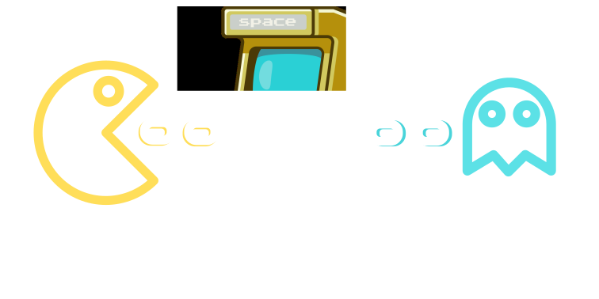

- Se você é apaixonado por games clássicos e quer reviver os melhores momentos da sua infância, você está
no lugar certo! O Game Station é o seu portal definitivo para baixar jogos e emuladores dos consoles que
marcaram gerações. Aqui você encontra uma vasta seleção de títulos e ferramentas para rodar jogos dos
seguintes consoles:
- 🕹️ Game Boy Advance (GBA);
- 🕹️ Game Boy Color (GBC);
- 🕹️ PlayStation 1;
- 🕹️ PlayStation Portable (PSP);
- 🕹️ Nintendo DS;
- 🕹️ Nintendo 3DS.
- Tudo organizado, testado e pronto para download, com tutoriais que te ajudam a configurar os emuladores
e começar a jogar em poucos minutos.
Para quem for usar os arquivos disponibilizados, saiba que eles são apenas para fins
recreativos.